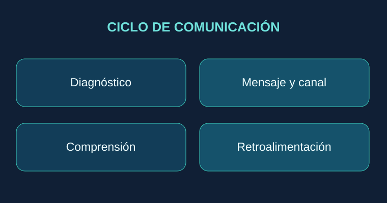
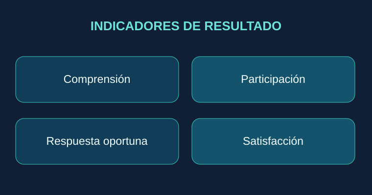
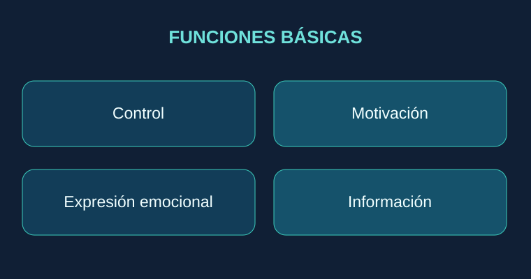
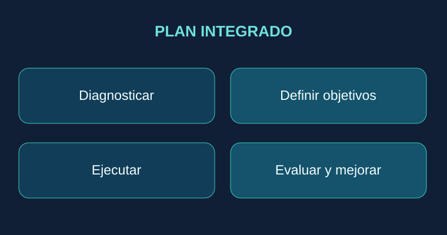

Comunicación interna y externa como capacidades estratégicas para coordinar personas, generar confianza y sostener resultados organizacionales.
Actividad 2 · Tres entradas académicas
Fundamentos · Entrada 01
Comunicación interna y externa: dos dimensiones de un mismo sistema
Comprender a quién comunica la organización, qué transmite y cómo construye confianza.
La organización como sistema comunicativo
La comunicación organizacional no puede reducirse a la circulación de avisos. Constituye un proceso social y estratégico mediante el cual personas y grupos construyen significados, coordinan decisiones y vinculan los objetivos institucionales con sus públicos. La comunicación adquiere valor cuando el mensaje es comprendido, puede contrastarse y produce una respuesta pertinente. Gómez Aguilar (2007) estudia la comunicación como una función integral de empresas e instituciones y advierte sobre el problema de disponer de abundantes datos sin información relevante para decidir.
¿Qué entendemos por comunicación interna?
Es el conjunto planificado y también espontáneo de intercambios que se producen entre los integrantes de una organización. Su propósito es informar, coordinar, motivar, integrar y facilitar la participación de las personas. El material de las unidades 2 y 3, apoyado en Berceruelo (2011) y Vértice (2008), la presenta como una herramienta para transmitir objetivos, fortalecer identidad y acompañar procesos de cambio. Incluye la comunicación descendente —dirección a colaboradores—, ascendente —colaboradores a dirección— y horizontal —entre áreas y equipos—. Puede ser formal o informal, oral, escrita, audiovisual o no verbal.
¿Qué entendemos por comunicación externa?
Es la relación informativa y comunicativa que la entidad establece con clientes, proveedores, medios, autoridades, inversionistas, aliados y comunidad. No se limita a publicidad: abarca atención, escucha, relaciones públicas, gestión reputacional y respuesta ante contingencias. Sánchez Calero (2005) distingue comunicación externa operativa, estratégica y de notoriedad. La primera sostiene la actividad cotidiana; la segunda ayuda a interpretar el entorno; la tercera permite dar a conocer a la institución y su propuesta de valor.
Ilustración original: Mapa de públicos de la comunicación organizacional.

Ilustración original: Etapas del ciclo de comunicación y retroalimentación.
Un proceso común: del mensaje a la retroalimentación
Ambas dimensiones requieren reconocer al emisor, identificar destinatarios, definir objetivos, codificar mensajes comprensibles, elegir canales apropiados y verificar su recepción. El ruido puede surgir de jerarquías rígidas, tecnicismos, rumores, saturación informativa o canales inadecuados. La retroalimentación cierra el ciclo: comunicar no equivale a comprobar que alguien recibió un correo, sino a saber si comprendió y pudo actuar sobre su contenido.
Análisis aplicado: un hotel ante una interrupción tecnológica
Ejemplo ilustrativo: si un sistema de gestión hotelera deja de funcionar, la comunicación interna debe explicar a recepción, tecnología, gerencia y atención al huésped qué sucedió, quién decide, cuáles son los procedimientos alternos y cada cuánto habrá actualizaciones. La comunicación externa debe proporcionar información veraz y consistente a huéspedes, agencias y proveedores, sin exponer datos confidenciales ni realizar promesas sin sustento. La coordinación de ambas evita contradicciones y protege la confianza.
Idea central
La comunicación interna permite que la organización actúe con coherencia; la externa permite que esa coherencia sea visible y verificable por sus públicos. Una no sustituye a la otra: se complementan.
Objetivos y beneficios: comunicar para coordinar, comprometer y generar confianza
Cómo convertir los procesos comunicativos en resultados organizacionales medibles.
Los objetivos de la comunicación interna
La comunicación interna busca difundir planes y prioridades, orientar el trabajo cotidiano, fomentar participación, fortalecer pertenencia, anticipar conflictos y acompañar cambios. Según la unidad académica, con base en Díez (2006), también procura dar claridad al proyecto empresarial, enfocar la atención en lo relevante y reducir la resistencia a nuevas formas de trabajo. Su eficacia depende de un entorno en el que sea seguro preguntar, discrepar y reportar problemas.
Beneficios internos y sus límites
Entre los beneficios esperados se encuentran menor ambigüedad operativa, mejor coordinación interdepartamental, mayor circulación de aprendizajes, motivación y capacidad de respuesta. Sin embargo, enviar más mensajes no garantiza una comunicación mejor. Cuando se incrementa el volumen sin segmentación, los empleados pueden ignorar información crítica. Por ello conviene evaluar no solo el alcance, sino la comprensión, oportunidad y utilidad de los contenidos.
Los objetivos de la comunicación externa
La dimensión externa busca dar a conocer la misión, identidad, productos y servicios; establecer relaciones estables con grupos de interés; escuchar expectativas; diferenciar la propuesta institucional y sostener credibilidad. En las lecturas de Sánchez Calero (2005) y Pea y Rojas (2013) se destaca la coherencia entre identidad, mensajes, medios y públicos como fundamento de una estrategia de comunicación integrada.
Ilustración original: Objetivos y beneficios internos y externos.

Ilustración original: Cuadro de indicadores propuestos para evaluar comunicación.
Beneficios externos y criterio ético
Una comunicación externa bien diseñada puede fortalecer reputación, lealtad, percepción de transparencia y vínculos con clientes, proveedores, comunidades y autoridades. Es importante distinguir reputación de publicidad: la primera se construye a través de experiencias repetidas y la correspondencia entre lo dicho y lo hecho. La transparencia exige exactitud y continuidad informativa; no debe confundirse con divulgar información confidencial.
Indicadores para evaluar la estrategia
Un plan serio diferencia actividad de resultado. Como propuestas de evaluación —elaboradas para este blog, no como indicadores prescritos literalmente por los textos—, en comunicación interna pueden observarse comprensión de prioridades, participación en reuniones, tiempo de difusión de cambios y cierre de sugerencias. En comunicación externa pueden revisarse tiempo de respuesta, reclamaciones resueltas, consistencia de mensajes y evaluación de satisfacción de públicos. Las métricas deben asociarse a una línea base y a responsables concretos.
Caso aplicado: cambio de un procedimiento de servicio
Ejemplo ilustrativo: al introducir un nuevo protocolo de atención, primero se informa a colaboradores, se capacita a responsables y se habilitan preguntas. Después se actualizan los mensajes públicos y los canales de atención. La secuencia favorece una experiencia consistente y hace verificable la promesa de servicio. Comunicar antes de preparar a los equipos puede elevar las expectativas sin capacidad real de respuesta.
Funciones organizacionales y aplicaciones: de la teoría a la gestión estratégica
Una ruta práctica para integrar información, liderazgo, relaciones públicas y mejora continua.
Las cuatro funciones básicas de la comunicación interna
La unidad 2, con referencia a Chiavenato (2002), identifica cuatro funciones: control, motivación, expresión emocional e información. El control orienta las acciones a normas y acuerdos; la motivación aclara metas y reconoce resultados; la expresión emocional permite compartir necesidades, preocupaciones y satisfacción; y la información contribuye a elegir y ejecutar decisiones. Estas funciones se interrelacionan: un mensaje que establece reglas sin explicar razones puede alcanzar cumplimiento, pero deteriorar el compromiso.
Las funciones de la comunicación externa
La unidad 3 identifica actividades como el diseño de campañas, la elaboración y difusión de noticias, la atención a periodistas, el análisis de información de medios y la identificación de acontecimientos relevantes para públicos externos. Sánchez Calero (2005) agrega la necesidad de sostener relaciones regulares y comunicar con veracidad. En términos estratégicos, ello implica informar, escuchar, relacionar, posicionar y gestionar expectativas.
Medios y canales según su finalidad
Carvajal y Ormeño (2014) agrupan las herramientas internas en soportes impresos, contacto directo y medios electrónicos o mixtos. Un manual documenta procedimientos; una reunión resuelve dudas; una intranet o boletín facilita consulta posterior; una encuesta recoge percepciones. En el exterior, pueden emplearse portales web, comunicados, atención directa, redes sociales, campañas, encuentros comunitarios y relaciones con medios. El canal correcto depende de audiencia, urgencia, sensibilidad y posibilidad de interacción.

Ilustración original: Las cuatro funciones básicas de la comunicación interna.

Ilustración original: Modelo de siete pasos para un plan de comunicación integrada.
Diseño de un plan de comunicación integrada
Una aplicación directiva consiste en trabajar en siete momentos: 1) diagnosticar públicos y necesidades; 2) definir objetivos verificables; 3) identificar responsables y voceros; 4) preparar mensajes consistentes; 5) seleccionar medios y frecuencia; 6) ejecutar con mecanismos de escucha; y 7) evaluar y ajustar. Esta secuencia es una síntesis práctica construida a partir de los enfoques de planificación y diagnóstico de las lecturas, especialmente Pea y Rojas (2013).
Ejemplo de gestión de crisis
En una empresa de servicios, una interrupción prolongada exige mensajes diferenciados pero compatibles. Internamente, operaciones recibe instrucciones, dirección recibe situación y riesgos, y atención al cliente recibe respuestas autorizadas. Externamente, los usuarios requieren alcance, canales de apoyo, medidas provisionales y próximas actualizaciones. La velocidad es importante, pero también lo son la verificación de hechos, la privacidad y la coherencia entre áreas.
Conclusión individual: comunicar también es gobernar
Considero que la comunicación interna y externa debe entenderse como una capacidad de gestión, no como una actividad auxiliar limitada a divulgar anuncios. En el ámbito interno, fortalece la coordinación, la responsabilidad y la confianza necesaria para ejecutar decisiones. En el externo, permite relacionarse con el entorno con transparencia, credibilidad y sensibilidad a las expectativas de los públicos. Su aplicación más valiosa aparece cuando las dos dimensiones se diseñan de forma integrada: una promesa al cliente tiene que traducirse en comportamientos y procedimientos comprensibles para quienes la harán realidad. En consecuencia, la calidad de la comunicación debe evaluarse por lo que las personas comprenden, deciden y hacen, y no únicamente por el número de correos, publicaciones o campañas emitidas. Una organización que escucha, confirma y corrige se encuentra mejor preparada para adaptarse, gestionar riesgos y sostener su legitimidad.
Carvajal, L. G., & Ormeño, J. (2014). Circulación interna de la comunicación. En Técnicas administrativas básicas. Servicios administrativos (pp. 63–65). Editex.
Gómez Aguilar, M. (2007). La comunicación en las organizaciones para la mejora de la productividad: El uso de los medios como fuente informativa en empresas e instituciones andaluzas [Tesis doctoral, Universidad de Málaga].
Pea, I., & Rojas, S. (2013). Plan de comunicaciones integradas para un producto industrial: Caso Manufacturas Frago C. A. [Trabajo de grado, Universidad Católica Andrés Bello].
Sánchez Calero, M. L. (2005). Desarrollo de la comunicación externa en la empresa. Sala de Prensa, (83), 1–7. http://www.saladeprensa.org
Unidad 2 y 3: Comunicación interna y comunicación externa [Material didáctico compilado]. (s. f.). Material de curso no publicado.
Nota bibliográfica: el material de unidad compila autores adicionales (Berceruelo, Chiavenato, Díez, Vértice, entre otros). Se reconocen en el cuerpo del texto como fuentes citadas por la compilación; no se inventan fichas bibliográficas completas de obras no proporcionadas. Las ilustraciones son originales y los videos enlazan a sus autores en YouTube.